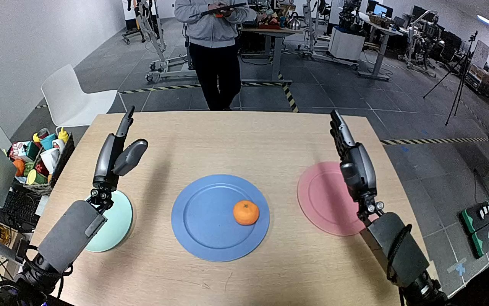

NVIDIA GR1 · 40
Video 40

Visual review action_review.json
{
"prompt_protocol": "humanoid_action_v1",
"prompt_provenance": "visually_authored_from_video_and_initial_frame",
"reviewed_contact_sheets": [
"sheet_001.jpg"
],
"inspected_frame_stride": 2,
"inspected_sampled_frame_count": 60,
"observed_sequence": [
{
"frame_interval": [
0,
15
],
"action": "Both open hands remain raised over the table; orange rests on the blue plate.",
"confidence": "high"
},
{
"frame_interval": [
16,
35
],
"action": "Robot left arm reaches inward toward the orange, presenting an open hand around its sides; right hand remains raised away from the fruit.",
"confidence": "high"
},
{
"frame_interval": [
36,
77
],
"action": "Left hand lowers around the orange and progressively curls fingers and thumb around it while it remains on the blue plate.",
"confidence": "high"
},
{
"frame_interval": [
78,
87
],
"action": "Left hand holds and lifts the orange clear of the blue plate.",
"confidence": "high"
},
{
"frame_interval": [
88,
103
],
"action": "Left arm transports the grasped orange leftward above the pale turquoise plate; blue plate is left empty.",
"confidence": "high"
},
{
"frame_interval": [
104,
115
],
"action": "Left hand lowers the orange into the pale turquoise plate while maintaining its grasp.",
"confidence": "high"
},
{
"frame_interval": [
116,
119
],
"action": "Left fingers and thumb open; orange is left resting in the pale turquoise plate beneath the open hand.",
"confidence": "high"
}
],
"arm_hand_roles": {
"left": "Sole manipulating hand: reaches inward, encloses orange between fingers and thumb, lifts, carries to pale turquoise plate, lowers and opens to release.",
"right": "Remains raised on the robot right side without contacting the orange or either plate; slight posture movement only.",
"coordination": "No bimanual manipulation or transfer; left hand executes the entire fruit transfer."
},
"anatomical_side_evidence": {
"evidence": "Camera looks forward over paired forearms extending from lower corners toward the table. Initial hand on image left has its thumb on the inward (image-right) side, consistent with robot left hand; image-right hand has its thumb on its inward (image-left) side. The active arm remains continuously attached to the lower-left forearm throughout. This forward-facing camera and opposed medial thumb arrangement establish robot-relative left rather than a front-facing image-side swap.",
"confidence": "high",
"limitation": "Shoulders and torso are outside the camera view; side evidence uses paired forward-facing forearms and thumb anatomy."
},
"initial_scene": "An orange rests toward the right side of the central blue plate. The pale turquoise plate on robot left and pink plate on robot right are empty; both hands are initially open and elevated.",
"evidence_frame_indices": [
0,
36,
76,
84,
100,
114,
119
],
"initial_frame_inspected_at_native_resolution": true,
"inspection_coverage": "Viewed all 60 every-second decoded frames across source frames 0–118 on sheet_001.jpg, native transitions at 36,76,84,100,114 and final frame 119, plus original native first-frame PNG.",
"terminal_state": "Orange rests on the pale turquoise plate, with left hand opened above/alongside it; blue plate is empty. Right hand remains away from the object.",
"uncertainties": [
"Exact instant of plate contact during lowering is partially hidden by the left hand; final open-hand frame shows the orange resting on the destination plate."
],
"annotation_discrepancies": [],
"selected_execution_status": "success",
"video_id": "40",
"dataset": "NVIDIA_GR1_100",
"dedicated_review_agent": "review_gr1_40",
"review_source_video": "NVIDIA_GR1_100/40/original/original.mp4",
"source_frame_count": 120,
"source_fps": 20.0,
"native_detail_frames": [
36,
76,
84,
100,
114,
119
],
"world_model_prompt": "The robot reaches inward with its left hand and closes its fingers and thumb around the orange on the blue plate. It lifts the orange, carries it leftward to the pale turquoise plate, then lowers and releases it onto the plate by opening its hand. Keep the camera fixed; preserve robot geometry, physically valid joint motion, and normal gripper opening and closing.",
"original_task_instruction": "Use the left hand to pick up orange from blue plate to pale turquoise plate.",
"selected_segment": {
"start_frame": 0,
"end_frame_exclusive": 120,
"reason": "Complete original single-task reference; no cropping or trimming requested."
},
"source_video_sha256": "01655568e925517c76089b1de7bf27e4ed265c05d9028593e4e7ae9971c03225",
"review_completed_at": "2026-10-13T18:04:04.928283+00:00"
}